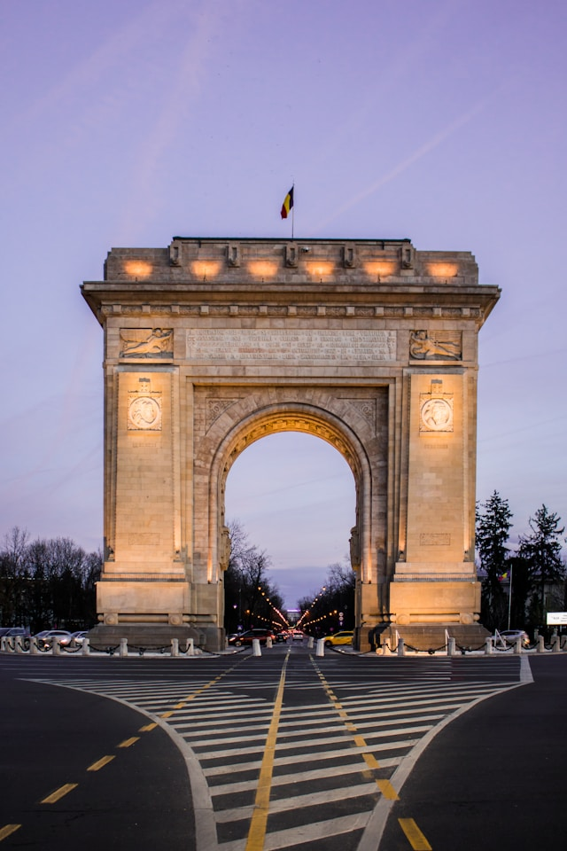
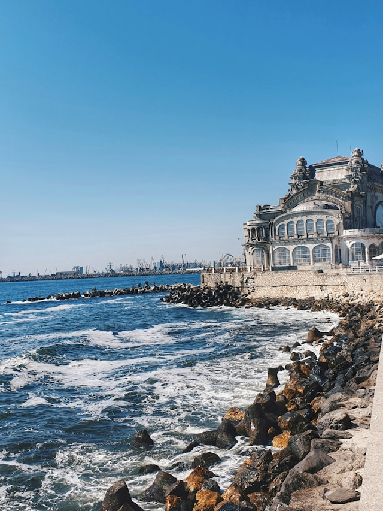
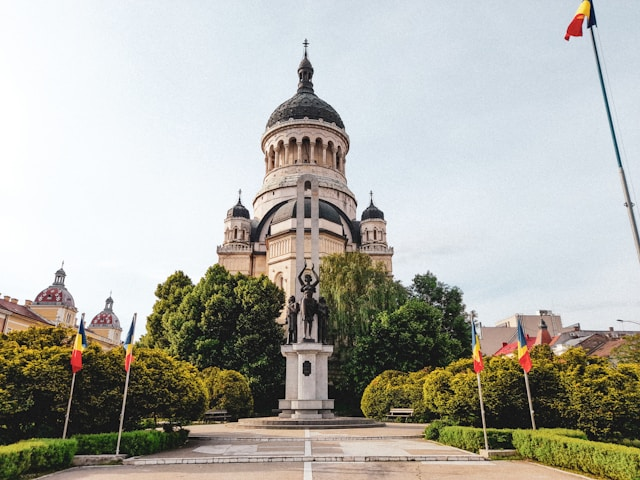
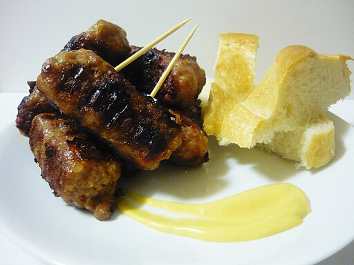
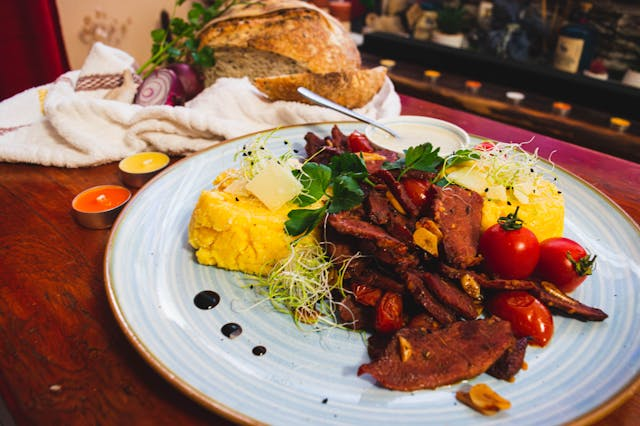

History, food, and city adventures across three regions
Welcome to Romania
Romania combines mountain landscapes, medieval towns, and lively urban culture.
This site focuses on Wallachia, Transylvania, and Moldova while highlighting major
destinations such as Bucharest, Cluj-Napoca, Suceava, and Constanta
Romania is traditionally divided into several historical regions, each
with its own identity and traditions. This guide focuses on Wallachia,
Transylvania, and Moldova, three regions known for their castles,
monasteries, vibrant cities, and breathtaking landscapes
Historic Cities & Landmarks
From the grand boulevards of Bucharest to the medieval streets of Sibiu
and Sighisoara, Romania offers a rich architectural heritage. Visitors
can explore castles, historic churches, monasteries, and UNESCO heritage
sites across the country
Nature & Scenic Landscapes
Romania's landscapes range from the towering peaks of the Carpathian
Mountains to the forests of Transylvania and the shores of the Black Sea.
The country offers spectacular natural scenery ideal for hiking,
photography, and cultural exploration
Travel Tips
Romania is best explored by combining city visits with countryside trips.
Spring and early autumn offer pleasant weather and fewer crowds, while
summer is ideal for visiting the Black Sea coast. Trains operated by the
national railway (CFR) connect most major cities, making travel between
regions convenient and scenic
Quick Trip Planning Tips
Pack layers for variable weather, keep cash for smaller towns, and include one
rest day between long intercity travel legs
Wallachia
Wallachia is one of the historical principalities of southern Romania and was once
ruled by powerful voievods during the medieval period. The region's early capital
was the fortified city of Targoviste before political power gradually shifted to
Bucharest, which remains Romania's modern capital today. Wallachia is characterized
by rolling hills, fertile plains, and historic towns that reflect centuries of
political and cultural development
One of the most iconic landmarks associated with the region is Bran Castle. Perched
dramatically on a rocky hill near the Carpathian Mountains, the castle was built in
the 14th century and served as a strategic defensive fortress. Although commonly
linked with the Dracula legend, Bran Castle is historically valuable for its medieval
architecture and panoramic mountain views
Travelers can also visit Constanta on the Black Sea coast. As Romania's largest
seaport, Constanta combines ancient history with seaside tourism. Originally founded
as the Greek colony of Tomis, the city today offers beaches, maritime culture, and
historic landmarks such as the famous Constanta Casino overlooking the sea


Top Stops
Palace of the Parliament, Old Town, Curtea de Arges Monastery
Food
Sarmale, ciorba de burta, and papanasi served in traditional bistros
Regional Food Highlights
Try moussaka-style baked dishes, grilled mici, and seasonal produce from southern
markets near Bucharest and Prahova
Cultural Highlights
Historic monasteries
Medieval castles
Traditional markets
Local cuisine and festivals
Transylvania
Transylvania is one of Romania's most historically rich regions and is famous for its
dramatic landscapes, medieval towns, and cultural diversity. Surrounded by the
Carpathian Mountains, the region offers breathtaking natural scenery including forests,
alpine valleys, and mountain passes
Throughout history Transylvania has been influenced by Romanian, Hungarian, and Saxon
cultures, which shaped the architecture and traditions still visible today. Cities
such as Cluj-Napoca, Sibiu, and Brasov feature colorful historic squares, gothic
churches, and well-preserved medieval fortifications
The region is also known for its castles and fortified churches that once protected
settlements from invasion. Today Transylvania blends historic charm with modern
cultural life, festivals, universities, and growing technology industries centered in
cities like Cluj-Napoca

Top Stops
Cluj Old Center, Turda Salt Mine, nearby castles and fortified churches
Food
Goulash-style stews, smoked meats, and artisan pastries
Regional Food Highlights
Look for slow-cooked stews, smoked cheeses, and rustic breads influenced by
mountain and Saxon traditions
Cultural Highlights
Historic monasteries
Medieval castles
Traditional markets
Local cuisine and festivals
Moldova Region
The historical region of Moldova in northeastern Romania should not be confused with
the modern Republic of Moldova. This region has long been an important center of
Romanian political, religious, and cultural life
One of the most celebrated rulers of the region was Stefan cel Mare (Stephen the
Great), a 15th-century voievod who defended Moldova from numerous invasions and
strengthened the principality's independence. His reign left a lasting legacy in the
form of churches and monasteries built throughout the region
Among Moldova's greatest cultural treasures are the Painted Monasteries of Bucovina,
recognized as UNESCO World Heritage sites. Monasteries such as Voronet are famous for
their vividly colored exterior frescoes depicting biblical scenes and medieval history.
The city of Iasi later emerged as an important political and intellectual center and
remains one of Romania's major university cities today
Hearty soups, roasted meats, local cheeses, and honey desserts
Regional Food Highlights
Enjoy hearty soups, oven-roasted dishes, and honey-rich desserts shaped by
monastic and village culinary traditions
Cultural Highlights
Historic monasteries
Medieval castles
Traditional markets
Local cuisine and festivals
Romanian Food Highlights
Romanian cuisine blends rural traditions, Balkan flavors, and seasonal ingredients.
These dishes are popular across regional markets and family-run restaurants

Mititei
Grilled minced meat rolls served hot with mustard and fresh bread

Mici
A Romanian barbecue favorite often enjoyed in parks and open-air markets
Cold Salad
Refreshing appetizers with seasonal vegetables, herbs, and creamy textures
Coliva
A ceremonial wheat dessert with nuts and spices rooted in Orthodox tradition
Transportation
Romania is well connected by rail, road, and regional airports. The most common way
to travel between major cities is by train using the national railway operator CFR
Calatori. Trains connect Bucharest with cities such as Cluj-Napoca, Iasi, Brasov,
Sibiu, and Constanta
While travel times can be slower than in Western Europe, the rail system offers
scenic routes through the Carpathian Mountains and countryside. Modern InterCity
trains provide comfortable seating and connections between Romania's major urban
centers
Rail Travel
CFR trains link most Romanian cities. The Bucharest-Brasov-Cluj route is
particularly scenic as it crosses the Carpathian Mountains. Plan routes on
CFR Călători
Regional Buses
Private bus companies connect smaller towns and villages not served by direct
rail routes
Major cities such as Bucharest and Cluj-Napoca offer public transport including
buses, trams, and metro lines
Gallery
Bran Castle overlooking the Carpathian MountainsPeles Castle architecture in the Carpathian foothillsSibiu's historic square and colorful facadesVoronet Monastery, known for iconic painted wallsSucevita Monastery and fortified monastic architecturePanoramic view of the Rarau mountain landscapeConstanta coastline along Romania's Black Sea shoreArcul de Triumf landmark in Bucharest
Media
If the embedded player is unavailable in your browser, watch directly on
YouTube